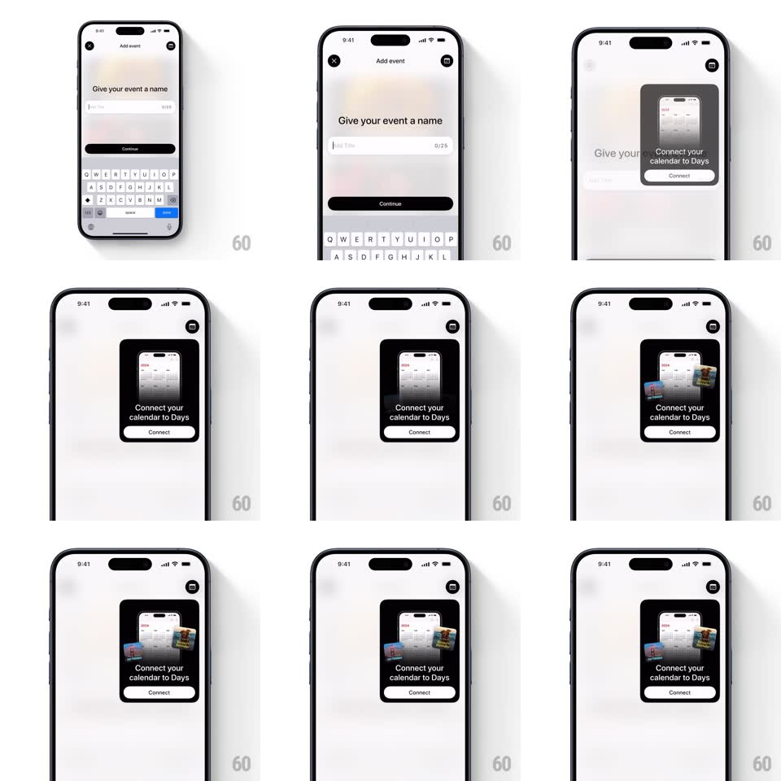

Media
Frame-by-frame

Rebuild this interaction 1:1: the Days connect-calendar modal - a black card springs down from the top of the screen growing out of the calendar icon's position, showing a mini calendar illustration with "Connect your calendar to Days" and a Connect button, while small event cards fan out from behind the illustration.

Rebuild this interaction 1:1: the Days connect-calendar modal - a black card springs down from the top of the screen growing out of the calendar icon's position, showing a mini calendar illustration with "Connect your calendar to Days" and a Connect button, while small event cards fan out from behind the illustration. ## Integration Integration: stack-agnostic spec - springs given as stiffness/damping, timed motions as duration + curve; map every value to your framework and animation library of choice. ## Scene The Add event screen (name field, Continue button, keyboard) recedes as a top-anchored black modal card appears: calendar illustration, "Connect your calendar to Days" text, Connect button, close X. ## Motion spec Pattern: springy top modal with a card fan. - The modal card scales/springs down from the top edge (spring ~320/22, 450ms, noticeable overshoot), the background dimming (0.4) behind it. - Once the card lands, small event cards fan out from behind the calendar illustration (rotate +/-12deg, translate outward, spring ~340/20, staggered 90ms). - The fan holds loosely - cards drift a few px (2s idle loop). - Close (X or Connect): cards pull back in (200ms) and the modal springs up off the top (spring ~380/26), background undimming. ## Calibration - The modal is top-anchored, not centered - it owns the upper half of the screen. - The fan-out is the delight beat: exactly 2-3 small cards, clearly behind the main illustration. ## Reduced motion Modal fades in at its final position (250ms); cards appear pre-fanned. ## Don't miss - The keyboard dismisses as the modal arrives - the two never overlap. - The underlying Add event screen stays put (no slide), just dims.